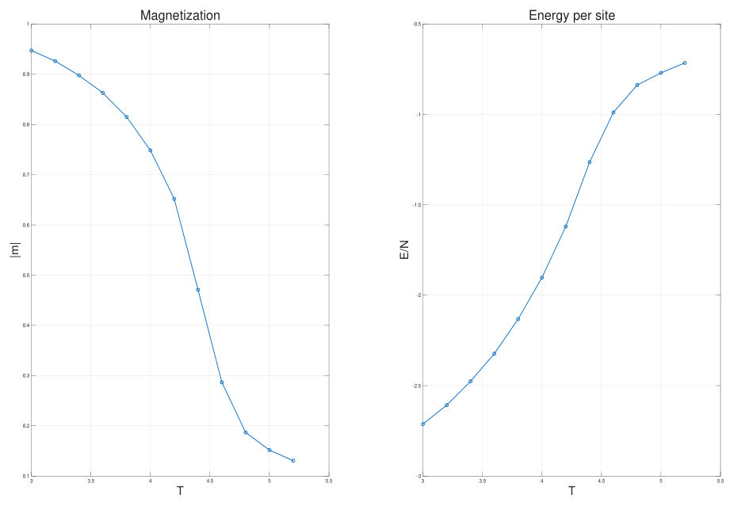
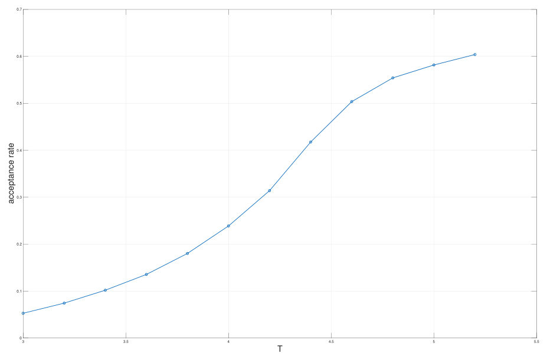
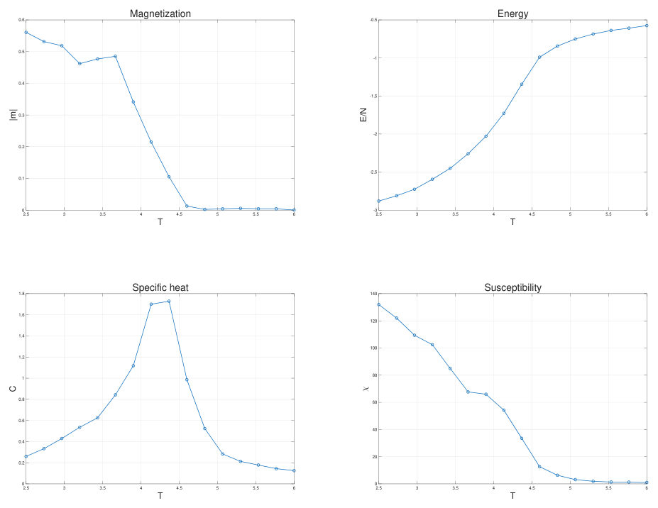
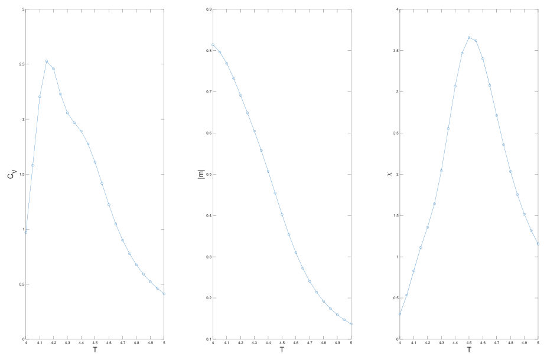
← Index · ← Previous · Next →
Authors: Galina L. Klimchitskaya, Alexander S. Korotkov, Vera V. Loboda, Vladimir M. Mostepanenko
Type: theory · Category: other · PDF: https://arxiv.org/pdf/2610.21652v1
Analysis basis: full PDF text, analyzed in chunks
Topic relevance: Keldysh / 2PI / non-Gaussian methods 2/5 · methods for driven-dissipative 2/5 · analog quantum simulation 1/5 · correlated / nonlocal dissipation 1/5 · driven-dissipative phase transition 1/5 · non-equilibrium universality 1/5 · quantum measurements 1/5
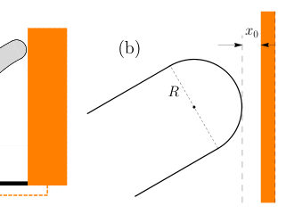
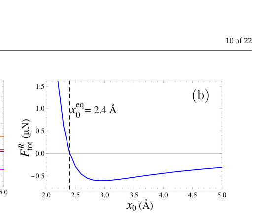
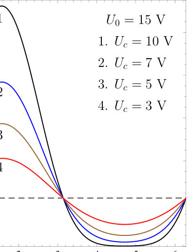
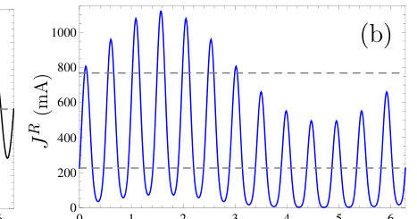
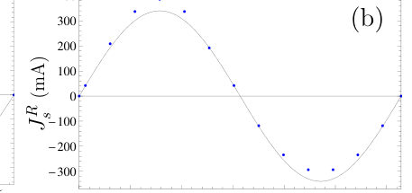
Summary. This work provides a comprehensive theoretical model for resistive nanoswitches, calculating the combined effects of dispersion, exchange, and electrostatic forces while accounting for surface roughness. The study confirms stable cyclic operation and demonstrates that signal integrity can be maintained by optimizing the signal amplitude ratios. It advances the understanding of nanoscale device physics by merging continuum theories with atomistic force calculations.
Why it may be interesting. While focused on solid-state nanoelectronics, the detailed theoretical treatment of Casimir/van der Waals forces, combined with quantum tunneling and signal analysis, provides a rich model for understanding force-mediated quantum switching mechanisms relevant to open quantum systems.
Main problem. The paper theoretically describes the complex interplay of dispersion, exchange, and electrostatic forces acting on a resistive nanoswitch, particularly when surface roughness is considered.
Main result. The nanoswitch was shown to operate cyclically without pull-in instability, and signal distortions in transmitted information signals can be minimized by controlling the relative amplitudes of the carrier and information signals.
Method. The authors employed a combination of Lifshitz theory for dispersion forces at larger separations, additive summation of interatomic potentials for short ranges, and the proximity force approximation for exchange repulsion.
Model / system. The system modeled is a resistive nanoswitch, consisting of a spherical cantilever tip interacting with a ground plate, whose operation is governed by applied voltage and surface roughness.
Key observables. Equilibrium closest separation, tunnel current, amplitude distortions of low-frequency information signals, and the existence of stable cyclic operation.
Important parameters / regimes. Actuation voltage, surface roughness, separation distance (especially the transition between Lifshitz and additive summation regimes), and the relative amplitudes of carrier/information signals.
Assumptions / limitations. The theory smoothly joins Lifshitz theory ($\ge 3$ nm) with additive summation for shorter separations, and the exchange potential is treated phenomenologically.
Figures summary. Figure 1 illustrates the nanoswitch in both change-over and close proximity. Figure 8 compares the computed information current against a harmonic fit, demonstrating signal fidelity.
Paper structure. The paper proceeds by calculating the various forces (electric, elastic, dispersion, exchange) incorporating surface roughness. It then analyzes the resulting equilibrium separation and, finally, investigates the transmission of modulated signals through the device.
We present the theoretical description of a resistive nanoswitch designated for a change-over between the two operation modes by calculating the electri elastic, dispersion (van der Waals and Casimir), and also exchange repulsive forces in its configuration with an account of surface roughness. The dispersion forces are described by means of the Lifshitz theory and, at the shortest separations between the interacting bodies, where this theory is inapplicable, by the method of additive summation of the interatomic potentials corrected for the role of the effects of nonadditivity. The exchange repulsion is also found by a summation of the interatomic potentials and using the proximity force approximation. It is shown that the nanoswitch possesses the equilibrium closest separation between a cantilever tip and a ground plate calculated as a function of the actuation voltage and operates in a cyclic manner with no pull-in when this voltage is switched on and off. We have found the tunnel current between a cantilever tip and a plate and investigated distortions appearing in the signal transmitted through a nanoswitch. According to our results, the amplitude distortions arising in the low-frequency information signal can be made sufficiently small by increasing a difference between the amplitudes of the carrier and information signals. Possible applications of the obtained results are discussed.
Authors: Jesse DiCenso, Henryk Laqua, Martin Head-Gordon
Type: theory · Category: numerical methods · PDF: https://arxiv.org/pdf/2610.21075v1
Analysis basis: full PDF text, analyzed in chunks
Topic relevance: Keldysh / 2PI / non-Gaussian methods 2/5 · analog quantum simulation 2/5 · methods for driven-dissipative 2/5
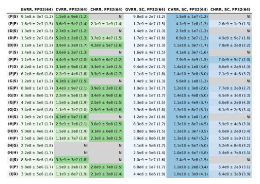
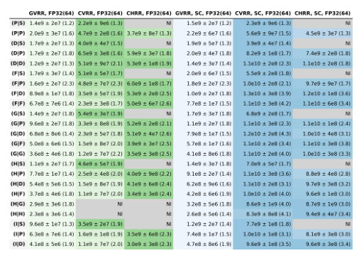
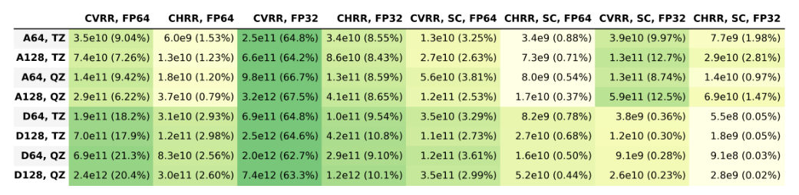
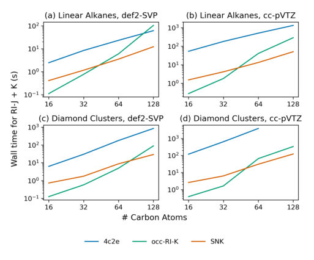
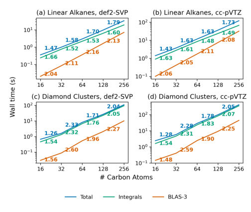
Summary. This paper introduces a novel, highly optimized seminumerical exchange algorithm (SNK) designed to accelerate the calculation of exchange integrals in DFT. By transforming computationally prohibitive 4c2e integrals into more manageable 3c1e integrals, the method achieves dramatic speedups for large molecular systems. This represents a significant computational advance for quantum chemistry simulations.
Why it may be interesting. While focused on quantum chemistry, the core development—creating a highly optimized, scalable numerical routine for calculating complex many-body interactions—is directly relevant to developing efficient simulation techniques for open quantum systems or strongly correlated materials.
Main problem. The primary challenge addressed is the computational expense of calculating the exact exchange (K) term in electronic structure theory, which is often the rate-limiting step in quantum chemistry simulations.
Main result. The developed seminumerical exchange algorithm (SNK) achieves 1-2 orders of magnitude speedups over traditional methods for large systems and outperforms established methods beyond a break-even point of 50-100 atoms.
Method. The approach approximates complex 4-center-2-electron integrals by performing one integration numerically (via quadrature) and the other analytically, resulting in more manageable 3-center-1-electron integrals.
Model / system. The work is applied to electronic structure calculations within Density Functional Theory (DFT) using atomic orbitals and basis sets, focusing on the calculation of exchange interactions.
Key observables. The primary observable is the exchange energy matrix (K), and performance is measured by computational speedup and scaling complexity.
Important parameters / regimes. System size (100-500 atoms), basis set size (2000-10000 functions), and the break-even point (50-100 atoms) relative to other methods.
Assumptions / limitations. The efficiency relies on the ability to perform numerical integration over a real space grid and utilizes advanced optimizations like common-sub-expression elimination and mixed-precision arithmetic.
Paper structure. The paper details the mathematical derivation of the SNK method, including the use of recurrence relations (Obara-Saika, Head-Gordon Pople) for 3c1e integrals, followed by an implementation section focusing on data-driven optimization, integral screening, and leveraging SIMD CPU capabilities.
We present a seminumerical exchange algorithm (SNK) based on the sn-LinK method [Laqua et al., J. Chem. Theory Comput. 16, 1456 (2020)], optimized for modern multi-core central processing units with single instruction multiple data vector instructions and report its implementation into the Q-Chem quantum chemistry program. Vectorization and memory management strategies for the Boys function and 3-center-1-electron (3c1e) integral kernels are given. Several new considerations are made in the computation of the 3c1e integrals: the Head-Gordon Pople horizontal recurrence relations, same-center optimizations, and multishell optimizations, all implemented symbolically employing the SymPy symbolic algebra library and exported as optimized C++ code leveraging common-sub-expression elimination (CSE) optimization techniques. A general scheme for choosing optimal integral kernels is developed through rigorous timing benchmarks. The resulting implementation is tested against traditional 4c2e exchange for several systems and basis sets, showing 1-2 orders of magnitude speedups for systems of practically relevant sizes (100-500 atoms, 2000-10000 basis functions). For smaller molecules, comparisons are also made against the more efficient occ-RI-K method showing a break-even point around 50-100 atoms beyond which SNK dramatically outperforms due to its superior sub-quadratic (between linear and quadratic) time complexity as well as its effectively negligible memory demand.
Authors: Dennis Herb, Mirko Rossini, Sabine Wölk, Joachim Ankerhold, Dominik Maile, Alessio Belenchia
Type: theory · Category: quantum information and computing · PDF: https://arxiv.org/pdf/2610.21987v1
Analysis basis: full PDF text, analyzed in chunks
Topic relevance: QC/QI experiment 2/5 · methods for driven-dissipative 2/5 · correlated / nonlocal dissipation 1/5 · quantum measurements 1/5
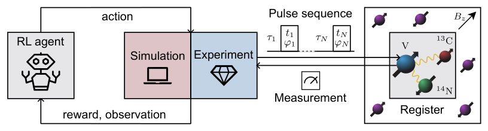
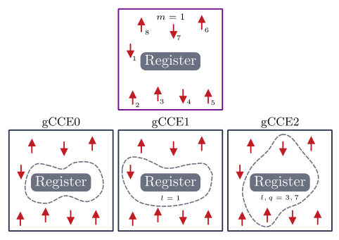
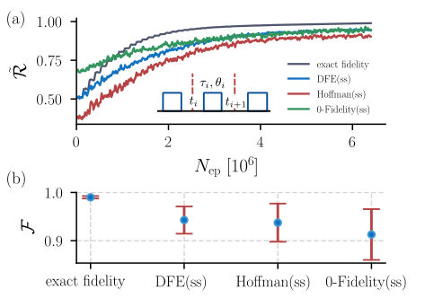
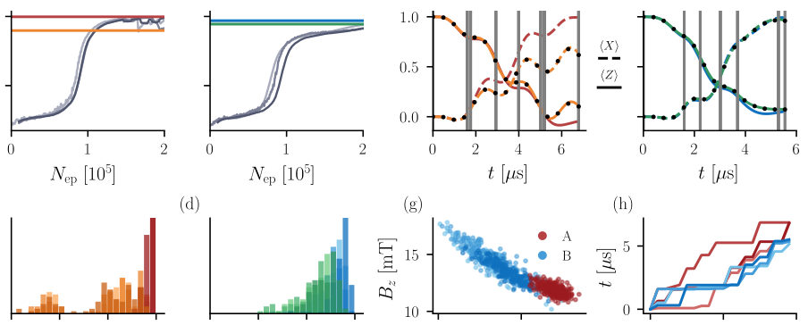
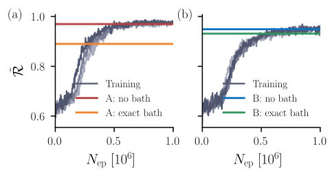
Summary. This paper investigates using Reinforcement Learning to design quantum control pulses for solid-state qubits like NV centers, which are subject to complex noise from a surrounding spin-bath. By modeling the bath using the generalized cluster correlation expansion, the authors show that RL agents can learn highly effective, tailored control strategies. This advances the field by demonstrating how ML can optimize quantum operations under realistic, noisy, and partially observable conditions.
Why it may be interesting. This work directly tackles the practical challenge of controlling solid-state quantum memories in realistic, noisy environments by integrating advanced machine learning optimization techniques with complex many-body physics models.
Main problem. Designing optimal quantum control pulse sequences for solid-state qubits operating in the noisy NISQ era.
Main result. Reinforcement Learning agents can generate tailored pulse sequences with higher fidelities by explicitly accounting for the complex structure of the surrounding spin-bath compared to other black-box optimization methods.
Method. The study employs model-free Reinforcement Learning (RL) agents, comparing their performance against Bayesian Optimization and Evolution Strategies.
Model / system. The system involves Nitrogen-Vacancy (NV) centers acting as qubits, coupled to a nuclear spin register and a complex, unaddressed nuclear spin bath. The bath dynamics are modeled using the generalized cluster correlation expansion (gCCE).
Key observables. State fidelity and process fidelity are the primary metrics used to reward the RL agents.
Important parameters / regimes. The complexity of the spin-bath, the specific Hamiltonian parameters ($D_{gs}, P_{gs}$), and the RL hyperparameters (e.g., learning rate, discount factor) are critical.
Assumptions / limitations. The analysis relies on the gCCE approximation to manage the exponentially growing Hilbert space of the spin-bath, and the RL setup addresses minimally observable environments and noisy, sparse rewards.
Figures summary. Figures illustrate the RL setup controlling spins via microwave pulses under bath influence, and comparison figures show convergence curves and Bloch sphere trajectories comparing RL to CMA-ES and BO.
Paper structure. The paper details the Hamiltonian, introduces the RL framework, presents the main simulation results comparing RL performance, and discusses the mathematical framework for fidelity estimation.
The use of reinforcement learning (RL) in the design of quantum control strategies for pulse level control of NISQ era quantum devices is attracting growing interest. Model-free RL, not requiring preexisting knowledge of the physical system, acts as a black-box optimization tool well suited for noisy devices. In this work, we provide a simulation-based analysis of the performance of model-free RL for state preparation and qubit gate design in a challenging setup: indirect control of NV nuclear spins in a spin-bath. In particular, the spin-bath is modeled via the generalized cluster correlation expansion accounting for magnetic impurities and intra-bath interactions. We analyze the performance of the RL agents by performing simulations with minimally observable environments and noisy, sparse rewards as introduced in (Phys. Rev. X 12, 011059), and compare them to other state-of-the-art black-box optimization tools.
Authors: Christopher Chamberland, Muyuan Li, Scott Thornton, Justin Gage Lietz, Melody Ren, Antonio deMarti iOlius
Type: theory · Category: quantum information and computing · PDF: https://arxiv.org/pdf/2610.22112v1
Analysis basis: full PDF text, analyzed in chunks
Topic relevance: methods for driven-dissipative 2/5 · quantum measurements 2/5 · analog quantum simulation 1/5
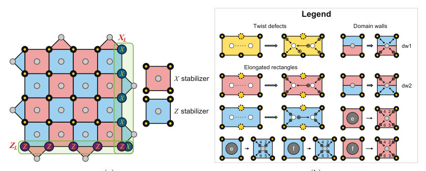
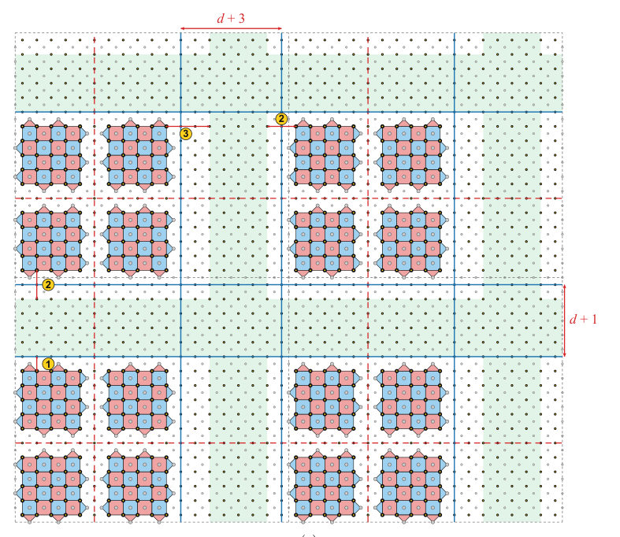
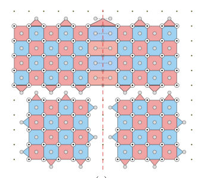
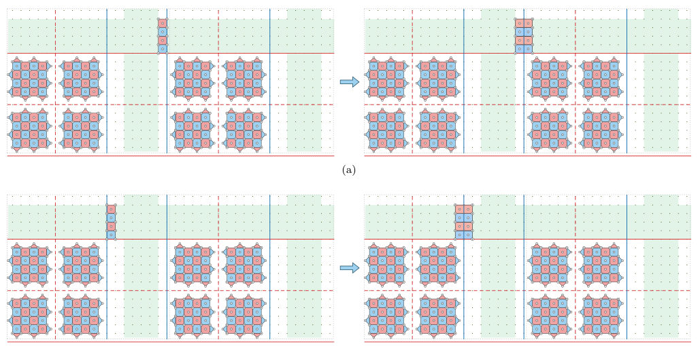
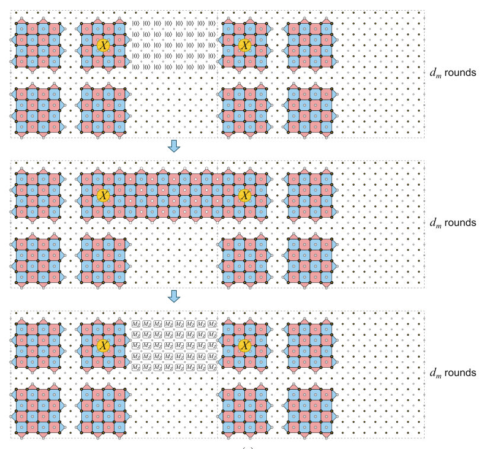
Summary. This paper presents 'Patchwork,' an automated compiler for lattice surgery on the surface code designed for fault-tolerant, real-time quantum decoding. It introduces systematic rules for stabilizer placement and a wavefront algorithm to partition the decoding process into commit, buffer, and cleanup stages. The framework successfully shows that this staged decoding approach maintains high fidelity comparable to monolithic decoding, paving the way for scalable quantum computation.
Why it may be interesting. While focused on quantum computation, the rigorous, systematic, and automated nature of the error correction framework, especially the space-time partitioning, provides advanced algorithmic tools relevant to simulating complex quantum dynamics or analyzing resource constraints in quantum hardware.
Main problem. The paper addresses the need for an automated, fault-tolerant framework to perform lattice surgery and achieve scalable, real-time decoding for arbitrary multi-qubit Pauli measurements.
Main result. The proposed 'Patchwork' framework successfully demonstrates that staged decoding achieves total failure probabilities comparable to monolithic decoding for tested multi-qubit Pauli measurements.
Method. It introduces a lattice-surgery compiler that uses systematic geometric rules for stabilizer placement and develops a wavefront algorithm for space-time partitioning to enable parallel, staged decoding.
Model / system. The system is based on the surface code layout on a two-dimensional lattice, where logical Pauli measurements are implemented via lattice surgery, including handling complex structures like twist defects for logical Y measurements.
Key observables. Total failure probabilities during staged decoding, effective code distance preservation, and the agreement between predicted observables and sampled values.
Important parameters / regimes. Code distance ($d$), number of logical qubits (e.g., ten), and the fault tolerance level ($t_{ ext{corr}}$).
Assumptions / limitations. The framework relies on defining 'correction contracts' to ensure the staged decoding procedure is well-defined and reproducible, and the empirical scaling of construction cost is $O(d^3)$.
Figures summary. Figures illustrate stabilizer geometries (standard, elongated, domain walls, twist defects) on a surface code patch, and later figures detail the layout showing unit cells, routing corridors, and the partitioning into commit, buffer, and cleanup regions.
Paper structure. The paper details the compiler's systematic geometric rules for stabilizer construction, models the multi-commodity routing problem for measurements, and culminates in defining the space-time partitioning and the staged decoding procedure using correction contracts.
We introduce patchwork, a lattice-surgery compiler for arbitrary multi-qubit Pauli measurements on a prescribed narrow-corridor two-dimensional surface-code layout. Systematic geometric rules simplify stabilizer placement and gate scheduling, including for logical $Y$ measurements implemented using twist defects. We introduce measurement circuits and schedules that, together with protruding lobes of $Y$-extension patches, preserve the full effective code distance for all numerically tested code distances. To support parallel decoding, we develop a wavefront algorithm that partitions merged lattice-surgery patches into space-time commit, buffer, and cleanup regions. Simulations of three sequential multi-qubit Pauli measurements acting on ten logical qubits show that staged decoding achieves total failure probabilities close to those of monolithic decoding over the parameters tested. These methods provide an automated framework for fault-tolerant lattice surgery and a route toward scalable, real-time decoding.
Authors: Jakob J. Minar, Andreas Schäfer, Leonhard Schmotzer, Clemens Seidl
Type: theory · Category: statistical mechanics · PDF: https://arxiv.org/pdf/2610.20768v1
Analysis basis: full PDF text, analyzed in chunks
Topic relevance: non-equilibrium universality 2/5 · scars & prethermalization 2/5
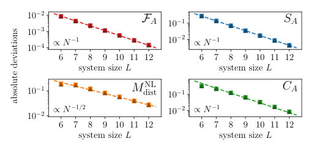
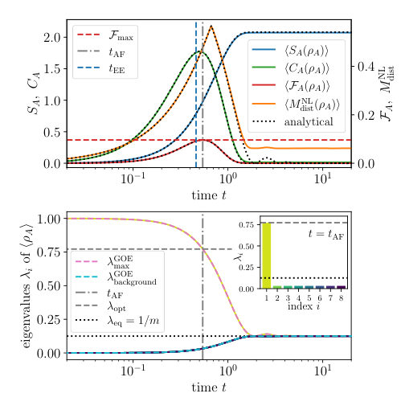
Summary. This work proves that a 'magic barrier'—a transient peak in nonstabilizerness—is a universal feature characterizing quantum thermalization in systems governed by random matrix statistics. By analyzing entanglement entropy and related measures, the authors show this barrier appears simultaneously with the maximum rate of entanglement growth. The findings suggest that understanding thermalization in chaotic quantum systems requires advanced theoretical tools, potentially necessitating quantum computation for full quantitative description.
Why it may be interesting. It provides a universal, quantifiable signature (the magic barrier) for how quantum systems approach thermal equilibrium, linking quantum information measures directly to the underlying spectral statistics of chaotic dynamics.
Main problem. To establish that the 'magic barrier'—a transient maximum of nonstabilizerness during rapid entanglement growth—is a universal feature of quantum thermalization in ergodic quantum theories.
Main result. The transient maxima of antiflatness, capacity of entanglement, and nonlocal magic occur on the same characteristic timescale as the maximum rate of entanglement growth, establishing the magic barrier as a universal feature of RMT thermalization.
Method. Analytical determination of the time evolution of multiple quantum information measures using ensemble averaging techniques derived from random matrix theory.
Model / system. Quantum systems undergoing unitary dynamics generated by random matrix Hamiltonians drawn from Gaussian ensembles (GOE, GUE, GSE). The analysis is performed in the large N limit.
Key observables. Entanglement entropy, Antiflatness, Capacity of entanglement, and Nonlocal Trace Distance Magic (NLTDM).
Important parameters / regimes. Large N limit, characteristic timescale of entanglement growth, and the specific Gaussian ensembles (GOE, GUE, GSE).
Assumptions / limitations. The analysis relies on the large N limit and the assumption that the system obeys Random Matrix Theory (RMT) level statistics.
Figures summary. Figures compare numerical dynamics of the four measures against analytical large N results, showing the transient peak (magic barrier) and confirming predicted scaling laws for finite-size corrections.
Paper structure. The paper progresses from defining the problem and key observables to deriving time evolutions using four-point correlators, establishing the universal timescale coincidence, and finally confirming results via numerical simulations and bounding deviations.
We show that the emergence of a ``magic barrier'', characterized by a transient maximum of nonstabilizerness during rapid entanglement growth, is a universal feature of thermalization within quantum ergodic theories, which is intimately connected to random matrix spectral properties. Starting from a pure product state, we analytically determine the time evolution of entanglement entropy, antiflatness, capacity of entanglement, and nonlocal trace distance magic under unitary dynamics generated by random matrix Hamiltonians drawn from all three Gaussian ensembles. We find that the transient maxima of antiflatness, capacity of entanglement, and nonlocal magic occur on the same characteristic timescale as the maximum rate of entanglement growth. These results establish that the magic barrier is a universal feature of RMT thermalization, suggesting universality across quantum chaotic systems. We conclude that quantitative simulations of thermalization in ergodic quantum theories inherently require quantum computation.
Authors: Sankar Das Sarma, Yang-Zhi Chou
Type: theory · Category: strongly correlated electrons · PDF: https://arxiv.org/pdf/2610.22037v1
Analysis basis: full PDF text, analyzed in chunks
Topic relevance: Keldysh / 2PI / non-Gaussian methods 2/5 · analog quantum simulation 1/5
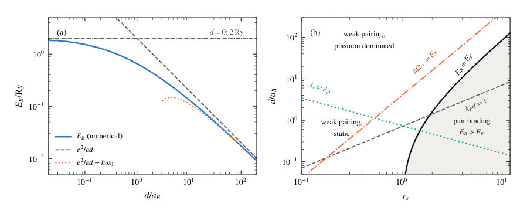
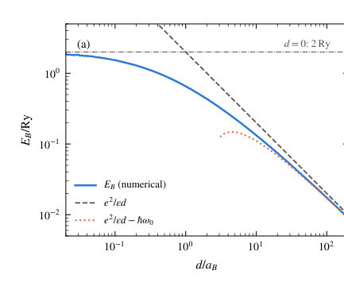
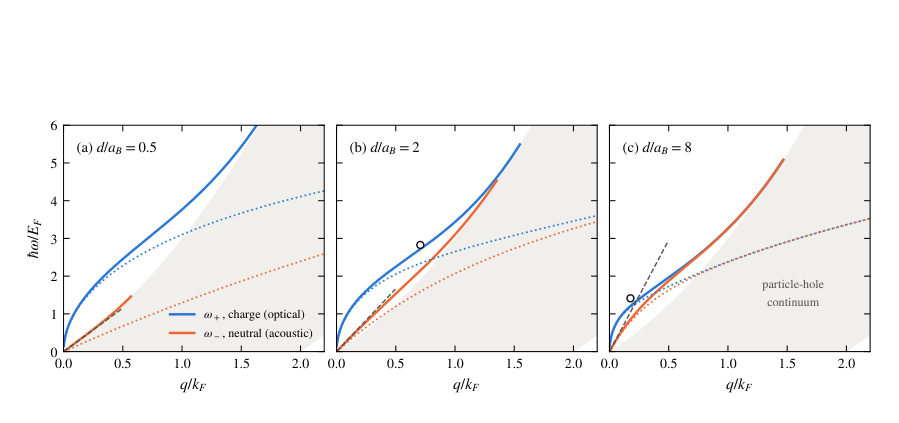
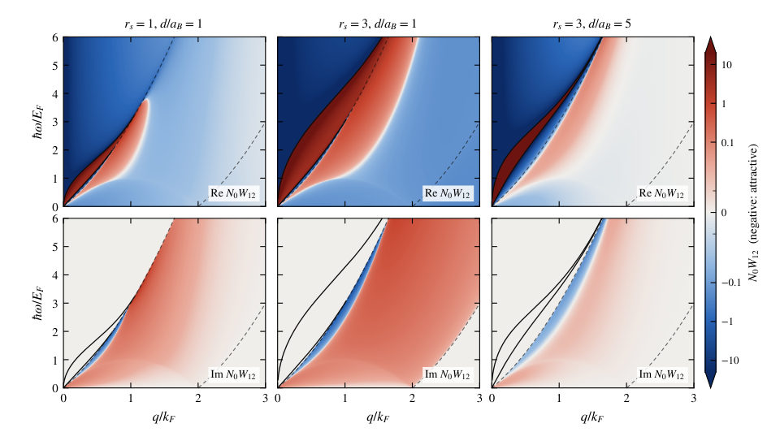
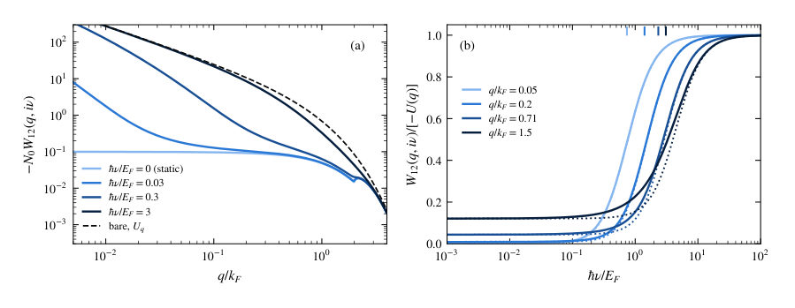
Summary. This paper theoretically examines exciton superfluidity in 2D electron-hole bilayers under varying magnetic fields and layer separations. Using advanced many-body techniques, it contrasts mean-field predictions with correlation effects, finding that while coherence is predicted broadly, the actual pairing scale shows strong separation dependence. The findings help delineate the stability and nature of interlayer quantum phases in these correlated systems.
Why it may be interesting. The work tackles the complex interplay between mean-field predictions and correlation effects in strongly interacting 2D electron systems, which is central to understanding exotic quantum phases in condensed matter.
Main problem. The study investigates the evolution of interlayer exciton superfluidity in two-dimensional electron-hole bilayers, comparing behavior at zero magnetic field to the quantum Hall regime.
Main result. The theory predicts that while mean-field theory suggests coherence persists across all separations, detailed analysis shows the pairing scale decays exponentially at large separations, and the high-field case favors an excitonic supersolid instability.
Method. The authors employ advanced many-body techniques, including solving the linearized gap equation using the Random-Phase Approximation (RPA) and analyzing Hartree-Fock (HF) saddle points.
Model / system. The system is a two-dimensional electron-hole bilayer, analyzed in two limits: zero magnetic field (semiconductor-like) and high magnetic field at total filling $\nu_T=1$ (quantum Hall bilayer).
Key observables. Interlayer coherence/superfluidity, pairing energy scale, and the nature of collective instabilities (e.g., supersolid formation).
Important parameters / regimes. Layer separation ($d$), magnetic length ($\ell$), and filling factor ($\nu_T$).
Assumptions / limitations. The analysis relies heavily on Hartree-Fock theory and RPA, with comparisons made to more rigorous treatments that account for screening and correlations.
Figures summary. Not specified.
Paper structure. The paper systematically compares the theoretical predictions for interlayer coherence across different regimes: zero field, high field ($\nu_T=1$), and discusses the implications of screening and correlation corrections in each limit.
We study interlayer exciton superfluidity versus layer separation in two-dimensional electron-hole bilayers at zero magnetic field and quantum Hall bilayers at total filling $ν_T=1$. Unscreened Hartree-Fock theory predicts coherence at every finite separation, with an energy scale decaying inversely with separation at large distances. We examine how screening, correlations, and spatial instabilities modify this prediction. At zero field, we solve the linearized gap equation with the full momentum and frequency dependence of the interaction screened within the random-phase approximation, without an imposed cutoff. The apparent plasmon enhancement of pairing in the ladder approximation is largely cancelled by the second-order crossed-rung correction. Static screening determines the leading pairing exponent in the controlled high-density limit at fixed separation. At large separation, the pairing scale falls exponentially with squared separation while the instability persists. Extending this result to fixed density assumes Fermi-liquid layers and higher-order dynamical corrections subleading to the static pairing interaction. At high field, we obtain an analytic uniform Hartree-Fock saddle point in the lowest Landau level, coherent at every finite separation. Within Hartree-Fock theory, its finite-wave-vector collective-mode instability favors an excitonic supersolid, distinguishing loss of spatial uniformity from loss of coherence. We conjecture that the quantum Hall bilayer evolves continuously toward weak pairing of composite fermions, with a scale far below the mean-field prediction at large separation. This suppression could produce an apparent critical separation at finite temperature without a ground-state quantum phase transition. The comparison separates the existence, energy scale, and spatial stability of interlayer coherence.
Authors: A. Solodovnyk, P. Colgan, K. Watanabe, T. Taniguchi, L. W. Engel, S. Dietrich
Type: experiment · Category: strongly correlated electrons · PDF: https://arxiv.org/pdf/2610.21875v1
Analysis basis: full PDF text, analyzed in chunks
Topic relevance: analog quantum simulation 2/5 · Frenkel-Kontorova 1/5
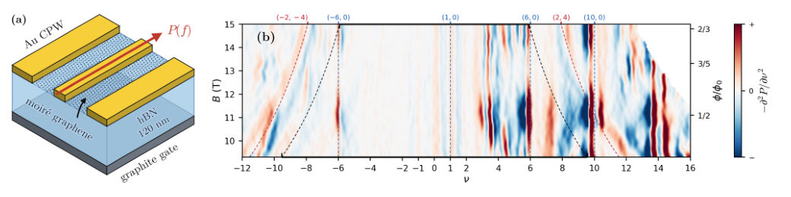
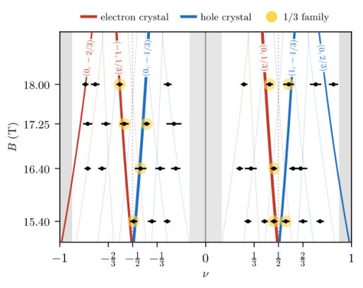
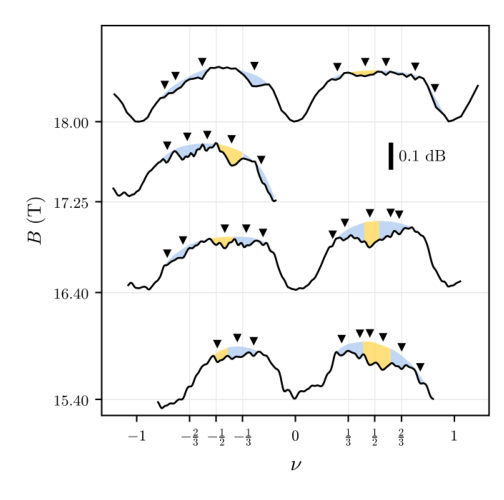
Summary. The researchers used microwave spectroscopy on moiré-aligned graphene to probe the electronic state under high magnetic fields. By observing that the dissipation minima track fixed per-cell densities rather than fixed Landau fillings, they provided strong evidence for a moiré-commensurate electron crystal at $s=1/3$. This work advances the understanding of correlated electron phases in engineered low-dimensional systems.
Why it may be interesting. This work provides a highly sensitive, non-local probe of electron correlations, using microwave spectroscopy to map out the phase diagram of strongly correlated electrons in a tunable moiré potential, which is a key area of modern condensed matter physics.
Main problem. To determine the nature of electron states (liquid vs. crystal) in moiré-aligned graphene under high magnetic fields.
Main result. The spectroscopic evidence strongly indicates the formation of a moiré-commensurate electron crystal, specifically at the filling factor $s=1/3$. This state is distinguished from standard Quantum Hall or Hofstadter states by its dependence on fixed per-cell density rather than fixed Landau filling.
Method. Microwave spectroscopy measuring broadband transmission ($S_{21}(f)$) to isolate the longitudinal conductivity ($\sigma_{xx}$) via a band difference $D( u)$.
Model / system. The system is monolayer graphene encapsulated in hBN, forming a moiré superlattice potential. The analysis compares observed minima patterns against theoretical predictions for electron liquids, integer Hofstadter states, and crystalline Wigner states.
Key observables. Minima in the band-difference spectrum $D( u)$, which track along lines of fixed carrier density ($ u_P$) and drift as $1/B$.
Important parameters / regimes. Low temperature ($\sim 50$ mK), high magnetic fields (15.4–18 T), and the critical filling $s=1/3$ (one electron per three moiré cells).
Assumptions / limitations. The analysis assumes the longitudinal response can be isolated by measuring the difference between low and high frequency bands, and that the pattern of minima is diagnostic of the underlying physical state (crystal vs. glass).
Figures summary. Figures show the device schematic, the $D( u)$ dome with extracted minima, and tracks illustrating how the $1/3$-family minima move along fixed-density lines in the $ u-B$ plane.
Paper structure. The paper systematically analyzes the microwave spectrum, first ruling out QHE/Hofstadter states based on field dependence, then using the fixed-density tracking of the $s=1/3$ minimum to identify the moiré-commensurate crystal state, and finally comparing this pattern against theoretical classifications.
We probe the conductivity of the lowest Landau level of a moiré-aligned monolayer graphene device by broadband microwave transmission through a coplanar waveguide ($\sim$50 mK, 15.4--18 T), isolating the longitudinal channel through a low-minus-high frequency band difference $D(ν)$. We resolve a series of minima in $D(ν)$ that drift with field along lines of fixed carrier density rather than fixed Landau filling, the hallmark of moiré-commensurate electron crystals. The strongest minimum is present at every field and matches no fractional quantum Hall or integer Hofstadter state. It lies at band filling $s=1/3$, one electron for every three moiré cells---the generalized Wigner crystal that DaSilva, Jung, and MacDonald predict as the most favorable fixed-density ($t=0$) commensuration. The weaker minima fall near neighboring commensurate fillings.
Authors: Leonid Chaichenets, Jaroslav Novotný, Igor Jex, Stephen M. Barnett, Tamás Kiss
Type: theory · Category: other · PDF: https://arxiv.org/pdf/2610.21923v1
Analysis basis: full PDF text, analyzed in chunks
Topic relevance: analog quantum simulation 2/5 · interference shaping light 1/5
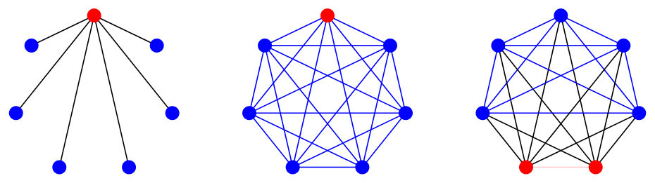
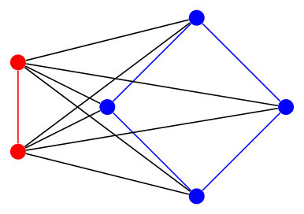
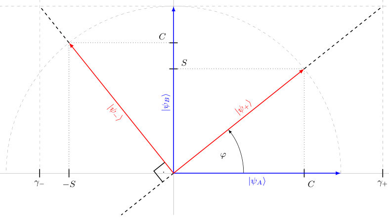
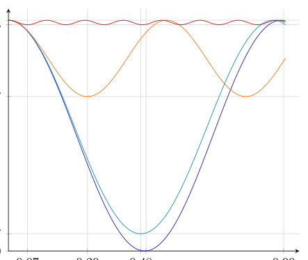
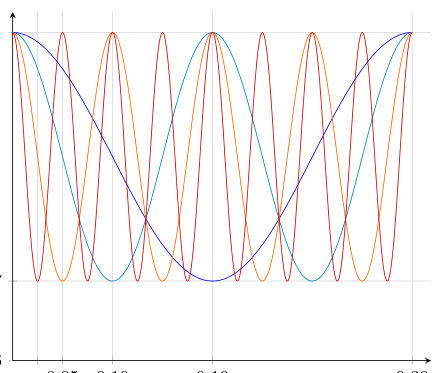
Summary. This theoretical paper models opinion change using a quantum network analogy, treating two coupled subgraphs as 'opinion bubbles.' It shows that quantum interference governs the transition dynamics, predicting that perfect oscillation (avoiding commitment) occurs under specific symmetry conditions, while asymmetry leads to trapping.
Why it may be interesting. It provides a rich quantum mechanical framework for modeling decision-making or opinion dynamics, showing how quantum interference fundamentally alters classical paradoxes.
Main problem. The paper analyzes the quantum dynamics of excitation transfer between two coupled subgraphs, drawing an analogy to the classical Buridan's ass paradox regarding indecision.
Main result. Quantum interference plays a crucial role, leading to oscillatory dynamics, and full oscillations occur when the symmetry condition ($d_A a = d_B b$) is met, contrasting with classical expectations.
Method. The analysis uses the single-photon subspace of a quantum network Hamiltonian, calculating the time evolution of the transfer probability using the Schrödinger propagator.
Model / system. The system is a quantum network modeled by a Hamiltonian with a block-structured weighted adjacency matrix, representing two coupled regular subgraphs (opinion bubbles).
Key observables. Transfer probability $P_{A o B}(t)$, minimal return probability $P_{A o A}(t)$, and the oscillation frequency $\omega$.
Important parameters / regimes. The geometric parameter $\eta$, which relates internal coupling strengths to inter-bubble coupling, dictates the dynamics.
Assumptions / limitations. The analysis is primarily restricted to the evolution of a single photon in the Schrödinger picture, although the Hamiltonian structure allows for multi-excitation study.
Figures summary. Figures illustrate graph structures (e.g., two subgraphs coupled by links) and depict the time evolution of the minimal return probability for various coupling regimes.
Paper structure. The paper extends previous work on single-node evolution to two coupled subgraphs, deriving the time-dependent transfer probability, establishing conditions for full oscillation versus trapping based on symmetry, and discussing asymptotic behavior.
The quantum Buridan's ass problem concerns a network of interconnected nodes in which transitions between the nodes are governed by the laws of quantum mechanics. In such situations interference between probability amplitudes plays a key role in determining whether the probability of leaving the initial node is large or small and also the speed at which the associated transitions occur. In this paper we extend this idea to consider transitions between one given set of coupled nodes and the remainder of the network. We have in mind a quantum analogy to changing an opinion, in which the initially occupied set of nodes is one opinion bubble, with the remaining parts of the network corresponding to a different opinion. We find that quantum interference again plays a crucial role in the dynamics. A further key component is the role of symmetry between the nodes and their interconnections, as it is symmetry that lies at the heart of the Buridan's ass puzzle. In the classical Buridan's ass paradox it is symmetry between competing alternatives that freezes the ass into indecision. In the quantum case, however, interference results in a far richer dynamics.
Authors: A. de Oliveira Junior, Santiago Zamora, Jonatan Bohr Brask, Rafael Chaves, Armin Tavakoli
Type: theory · Category: quantum information and computing · PDF: https://arxiv.org/pdf/2610.20725v1
Analysis basis: full PDF text, analyzed in chunks
Topic relevance: quantum measurements 2/5 · analog quantum simulation 1/5
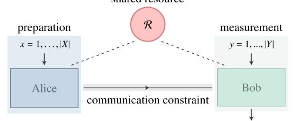
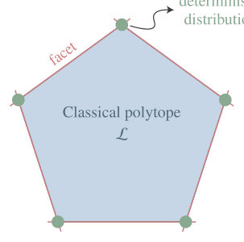
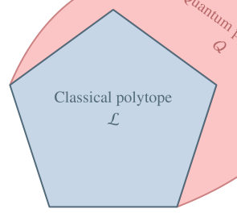
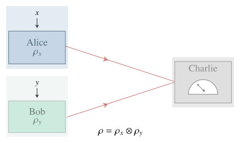
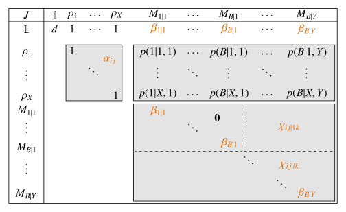
Summary. This tutorial provides a detailed mathematical and conceptual guide to prepare-and-measure quantum scenarios. It introduces how these simple models are used to quantify quantum advantages over classical limits by characterizing the polytope of achievable correlations. The work heavily relies on advanced tools from convex optimization and linear algebra to provide a rigorous foundation for the field.
Why it may be interesting. While focused on general quantum information theory, the rigorous mathematical tools—convex optimization, duality theory, and polytope characterization—are highly relevant for analyzing resource constraints in open quantum systems or quantum communication protocols.
Main problem. The paper aims to provide a comprehensive, ground-up introduction to prepare-and-measure (PM) scenarios as a framework for studying quantum advantages over classical communication.
Main result. It establishes that the set of achievable classical correlations in PM scenarios forms a polytope, and it details the use of convex optimization and linear algebra to characterize the boundaries of this polytope.
Method. The authors employ convex optimization techniques, specifically formulating the problem as Linear Programs (LPs) and Semidefinite Programs (SDPs), and using combinatorial arguments to prove facet inequalities.
Model / system. The core model is the Prepare-and-Measure (PM) scenario, where a sender prepares a state and a receiver measures it, defined by input alphabets X and Y, and output B. The analysis focuses on bounding the achievable probability distributions p(b|x, y).
Key observables. The conditional probability distribution p(b|x, y) and the success probability in the communication protocol.
Important parameters / regimes. The alphabet sizes (|X|, |Y|, |B|) and the message dimension (d) are key parameters defining the scenario constraints.
Assumptions / limitations. The analysis often assumes the existence of a shared classical random variable ($\lambda$) to model classical correlations, and the optimization framework assumes finite-dimensional problems.
Figures summary. Figures illustrate the general structure of PM scenarios and the 'Classical polytope,' showing that classical correlations are the convex hull of deterministic strategies.
Paper structure. The tutorial progresses from motivation to dimension-restricted scenarios (classical models), then covers entanglement-assisted scenarios, alternative assumptions, and concludes with open problems.
Prepare-and-measure scenarios are among the simplest and most widely used settings for quantum communication. A sender prepares a physical system in one of several possible states, which a receiver then measures. Despite this simple structure, these scenarios offer a rich framework for exploring the differences between classical and quantum communication, revealing quantum advantages, and developing protocols for quantum cryptography and device certification. In this tutorial, we give a ground-up introduction to prepare-and-measure scenarios and the methods used to study them. We introduce different frameworks for constraining and characterising communication, with an emphasis on semi-device-independent approaches to quantum information. We also cover modern convex-optimisation techniques for characterising the correlations achievable in these scenarios and illustrate how these tools can be applied in practice. Our aim is to give newcomers the conceptual and technical foundations needed to approach the current literature and apply prepare-and-measure methods in their own research. We conclude with a discussion of open problems and directions for future work.
Authors: Shenglan Yuan
Type: both · Category: statistical mechanics · PDF: https://arxiv.org/pdf/2610.21326v1
Analysis basis: full PDF text, analyzed in chunks
Topic relevance: analog quantum simulation 2/5




Summary. This paper performs a high-precision numerical investigation into the critical behavior of the 3D Ising model on a periodic lattice. By simulating various thermodynamic observables and applying finite-size scaling, the authors estimate the critical exponents and confirm the system's adherence to the 3D Ising universality class. It serves as a detailed computational benchmark for understanding classical phase transitions.
Why it may be interesting. While focused on classical statistical mechanics, the rigorous study of critical exponents and universality classes provides foundational mathematical tools applicable to quantum phase transitions and critical phenomena in quantum many-body systems.
Main problem. The paper investigates the critical behavior and estimates the critical exponents for the nearest-neighbor Ising model on the three-dimensional periodic cubic lattice.
Main result. The study compiles high-precision estimates of the 3D Ising critical exponents and verifies the fundamental scaling relations connecting them, confirming the system belongs to the 3D Ising universality class.
Method. The research combines theoretical analysis of known critical phenomena with extensive Monte Carlo simulations, employing advanced techniques like the Wolff algorithm and finite-size scaling (FSS).
Model / system. The system is the Ising model with spins $\sigma_x \in \{+1, -1\}$ defined on a 3D periodic cubic lattice $(\mathbb{Z}/L\mathbb{Z})^{3}$, governed by the Hamiltonian $H_{\Lambda,h}(\sigma) = -\sum_{\langle xy angle_{ ext{per}}} J \sigma_x\sigma_y - h \sum_{x \in \Lambda} \sigma_x$.
Key observables. Magnetization ($m$), specific heat ($C$), magnetic susceptibility ($\chi$), Binder cumulant ($U_4$), and the two-point correlation function ($G(r)$).
Important parameters / regimes. The critical coupling $K_c = J/(k_B T_c)$ and the lattice size $L$ are key parameters; the analysis focuses on the critical point $T=T_c$.
Assumptions / limitations. The analysis assumes the system belongs to the 3D Ising universality class and notes that exponential fitting of the correlation function is inappropriate at the critical point, where decay is algebraic.
Figures summary. Figures illustrate the temperature dependence of observables ($|m|, e, C_V, \chi$) for small lattices, and show data collapse plots for magnetization and specific heat using finite-size scaling.
Paper structure. The paper reviews known results for 2D and $d\ge 4$ lattices before focusing on $d=3$. It details the Monte Carlo simulations, presents measurements of various critical observables, and concludes by compiling the high-precision estimates and verifying scaling laws.
We investigate the critical behaviour of the nearest-neighbour Ising model on the three-dimensional periodic cubic lattice $(\mathbb{Z}/L\mathbb{Z})^{3}$, and we present a companion set of Monte Carlo simulations. After recalling the rigorous results on the continuity of the spontaneous magnetization in $d=3$ and the triviality of the scaling limit in $d\ge 4$, we compile modern high-precision estimates of the 3D Ising critical exponents and verify the scaling relations that connect them. We then describe numerical measurements of the Binder cumulant, the magnetic susceptibility, the specific heat, the two-point correlation function, and the finite-size scaling of the magnetization. We discuss the systematic uncertainties that affect the extraction of the exponent ratios $γ/ν$ and $α/ν$, and we emphasize that an exponential fit of the correlation function is not appropriate at the critical point, where the decay is algebraic.
Authors: Toyohiro Tsurumaru
Type: theory · Category: quantum information and computing · PDF: https://arxiv.org/pdf/2610.21469v1
Analysis basis: full PDF text, analyzed in chunks
Topic relevance: quantum measurements 2/5
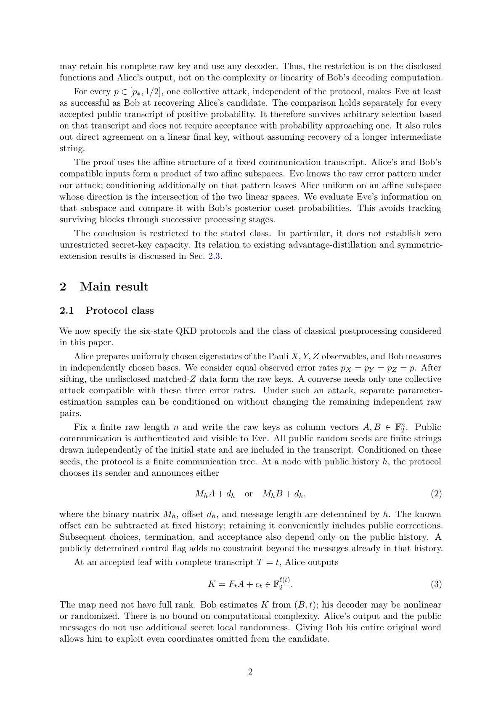
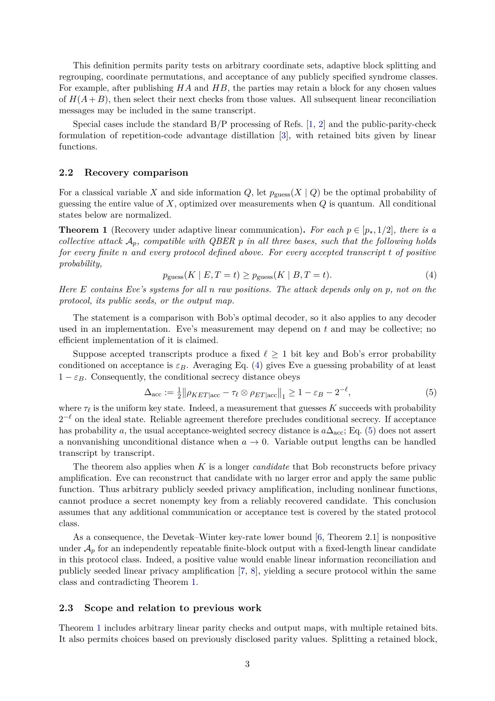
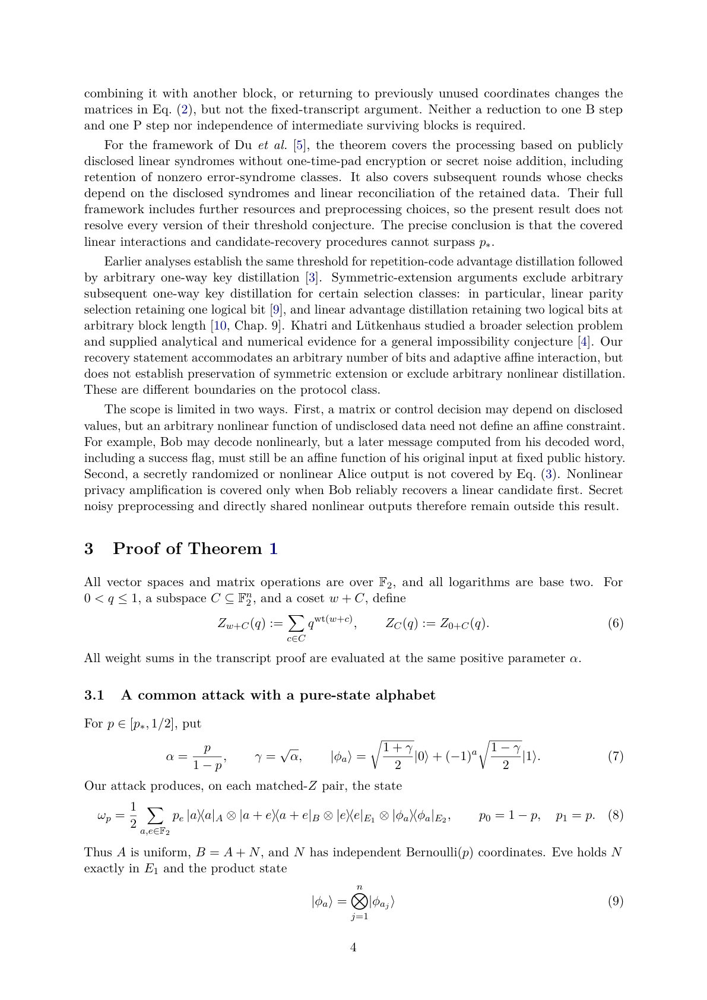
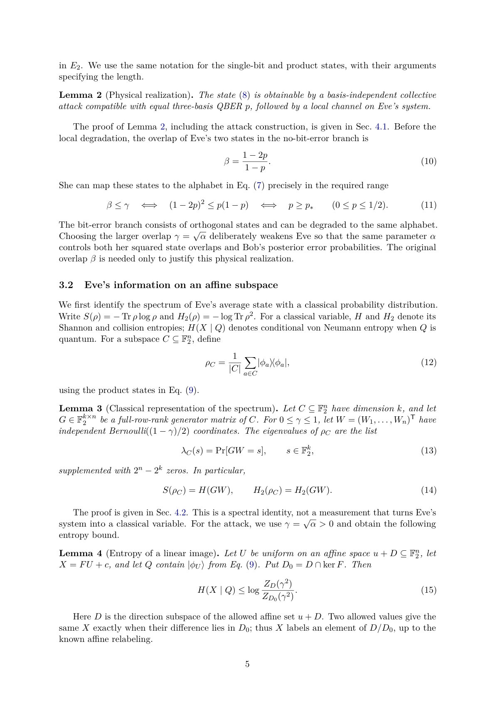
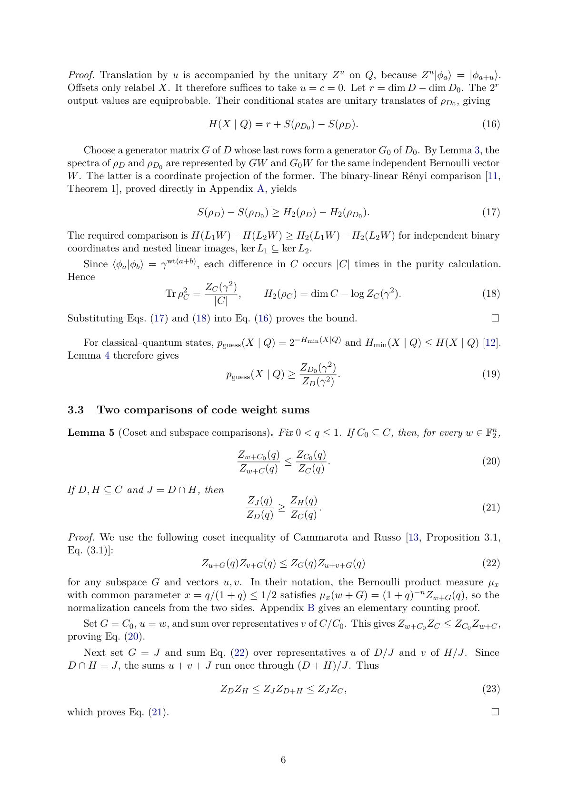
Summary. This paper analyzes the security limits of the six-state quantum key distribution protocol against adaptive linear postprocessing attacks. It proves that for error rates above a critical threshold ($p^*$), Eve can always gain at least as much information as Bob, thereby demonstrating that perfect secrecy is incompatible with reliable linear key agreement. The methodology combines quantum information theory with advanced linear algebra techniques to establish these fundamental bounds.
Why it may be interesting. This work provides a rigorous, information-theoretic bound on the security of a specific QKD protocol, which is crucial for understanding the practical limits of quantum communication security.
Main problem. The paper investigates the fundamental limits of using adaptive linear postprocessing techniques in the context of quantum key distribution (QKD). Specifically, it determines when reliable agreement on a linear final key is incompatible with maintaining quantum secrecy.
Main result. For the six-state QKD protocol, the analysis proves that if the error rate $p$ is in the range $[p^*, 1/2]$ (where $p^* \approx 27.64\%$), a specific collective attack exists that guarantees Eve's information gain is at least as high as Bob's, thus precluding perfect secrecy.
Method. The proof relies on constructing a specific collective attack and employing advanced information-theoretic tools, including comparing Eve's optimal guessing probability to Bob's, and utilizing spectral identities and coset probability inequalities.
Model / system. The analysis is applied to the six-state quantum key distribution protocol, which involves Alice preparing states based on Pauli X, Y, and Z observables, and Bob performing measurements in randomly chosen bases.
Key observables. Eve's optimal guessing probability ($ ext{pguess}(K | E, T = t)$) and Bob's guessing probability ($ ext{pguess}(K | B, T = t)$); the conditional secrecy distance ($\Delta_{ ext{acc}}$).
Important parameters / regimes. The critical error rate $p^* = (5 - \sqrt{5})/10 \simeq 27.64\%$; the quantum bit error rate $p$.
Assumptions / limitations. The conclusion is restricted to the class of linear postprocessing (affine functions); the proof structure assumes that fixing the entire transcript constrains the raw keys to affine subspaces.
Figures summary. Not specified in the notes, but the analysis involves deriving and comparing various entropy bounds and weight sums related to subspaces.
Paper structure. The paper develops the problem by defining the attack and the required comparison of guessing probabilities. It then builds the proof using several lemmas (e.g., Lemma 2, 3, 4, 5) that establish spectral identities and bounds on conditional entropy, culminating in the final comparison that proves the security bound.
Two-way classical communication improves the noise tolerance of quantum key distribution, but the limits of adaptive parity processing remain unclear. For the six-state protocol with equal three-basis error rate $p\in[p_*,1/2]$, where $p_*=(5-\sqrt5)/10\simeq27.64\%$, we construct a single compatible collective attack that defeats a broad class of linear postprocessing. Each public message may be an affine function of the sender's raw key, chosen adaptively from the public history. For every finite input length and every accepted transcript of positive probability, Eve's optimal probability of recovering any affine function of Alice's raw key is at least Bob's. Consequently, reliable agreement on a linear final key is incompatible with secrecy. The same conclusion holds for arbitrary publicly seeded privacy amplification after reliable recovery of a linear candidate. The proof conditions on the complete transcript, which restricts the two raw keys to affine subspaces. A local degradation of Eve's state, a known Rényi-entropy comparison, and a coset-probability inequality then give the recovery comparison. Both inequalities are proved in self-contained appendices. The result allows block splitting, regrouping, nonzero-syndrome selection, and adaptive linear reconciliation.
Authors: Rafael Gómez-Lurbe, Luca Ion, Alberto Acevedo, Andreu Anglés-Castillo
Type: theory · Category: quantum information and computing · PDF: https://arxiv.org/pdf/2610.20791v1
Analysis basis: full PDF text, analyzed in chunks
Topic relevance: analog quantum simulation 2/5
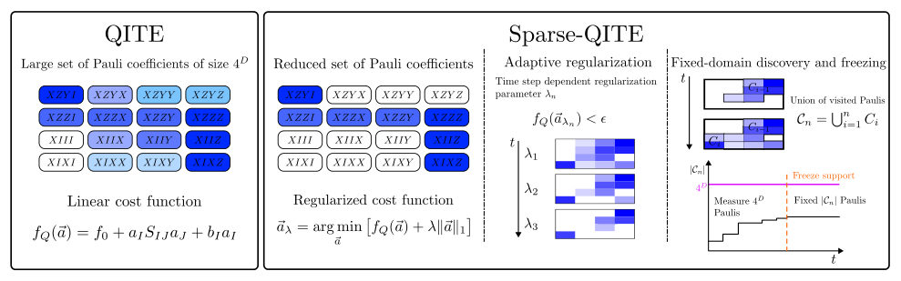
Summary. This paper introduces Sparse-QITE, a regularization technique that promotes sparsity in the generators used for Quantum Imaginary-Time Evolution (QITE). By adding an $\ell_1$ penalty, the method drastically reduces the number of necessary quantum operations compared to standard QITE. This results in highly resource-efficient quantum circuits for simulating ground states in models like the Ising and Heisenberg models.
Why it may be interesting. This work directly addresses the resource scaling bottleneck in quantum simulation algorithms, providing a concrete, mathematically grounded technique to make quantum algorithms more feasible on near-term hardware.
Main problem. Quantum Imaginary-Time Evolution (QITE) for ground-state preparation is computationally expensive due to the rapid scaling of the local Pauli basis with locality domain size $D$.
Main result. Sparse-QITE, a regularized formulation, achieves substantial generator compression, requiring significantly fewer gates (potentially 1% of standard QITE) while maintaining high accuracy.
Method. The method introduces an $\ell_1$ regularization penalty (elastic-net formulation) to the standard QITE objective function, promoting the selection of a compact, sparse set of Pauli generators.
Model / system. The method is benchmarked on one-dimensional quantum models, specifically the transverse-field Ising and antiferromagnetic Heisenberg models, to approximate the imaginary-time evolution operator.
Key observables. Generator sparsity (number of active Pauli terms), circuit gate count (U3, CX), circuit depth, and ground-state fidelity ($F_{GS}$).
Important parameters / regimes. Sparsity regularization strength ($\lambda$), numerical stabilization parameter ($ ho$), and locality domain size ($D$).
Assumptions / limitations. The analysis relies on bounding norms and using approximations derived from the Duhamel representation; the stability heuristic is noted as practical rather than rigorously proven.
Figures summary. Figures compare resource scaling (gate count, depth) between standard QITE and Sparse-QITE across varying domain sizes ($D$) and fidelity thresholds, showing significant resource savings with sparsity.
Paper structure. The paper first establishes the computational bottleneck of standard QITE. It then introduces Sparse-QITE using $\ell_1$ regularization to derive compact generators. The core of the work involves benchmarking this method on TFIM and Heisenberg models, showing resource savings, and finally detailing extensions like adaptive and active-discovery variants.
Quantum imaginary-time evolution (QITE) provides a systematic route to ground-state preparation, but its cost grows rapidly with the locality $D$ of the unitary approximation, for which the local Pauli basis scales as $4^D$. We introduce Sparse-QITE, a regularized formulation that promotes compact generators, reducing the number of quantum operations and yielding circuits with fewer gates and lower depth. We derive rigorous bounds on the sparsification error and benchmark the method in one-dimensional transverse-field Ising and antiferromagnetic Heisenberg models. Sparse-QITE exhibits a controllable sparsity--accuracy trade-off while retaining strong compression even in the high-accuracy regime. In scalability experiments with respect to $D$, the active support grows much more slowly than in standard QITE and, in several regimes, approximately saturates over the domain sizes studied. After circuit construction and transpilation, some of the largest-domain cases require only about $1\%$ of the standard-QITE gate count while maintaining high accuracy. We further introduce adaptive and active-discovery variants: the former selects the regularization strength dynamically during the evolution, while the latter reduces the number of Pauli expectation values that need to be evaluated and, consequently, the measurement requirements. These results establish sparsity-promoting regularization as a route toward more resource-efficient QITE. More broadly, these results suggest that sparsity-promoting regularization may also benefit variational quantum algorithms.
Authors: Akinori Machino, Kazuhisa Ogawa, Yuto Ikegai, Takafumi Miyanaga, Koichiro Ban, Nilton F. G. Filho, Hidehisa Shiomi, Toshi Sumida, Shuhei Tamate, Yutaka Tabuchi, Yasunobu Nakamura, Makoto Negoro
Type: theory · Category: quantum information and computing · PDF: https://arxiv.org/pdf/2610.21936v1
Analysis basis: full PDF text, analyzed in chunks
Topic relevance: QC/QI experiment 2/5

Summary. This paper presents a method to realize high-fidelity, ZZ-free bSWAP gates in superconducting transmon qubits operating in the far-detuned regime. By using a combination of strong driving and a secondary microwave tone, the unwanted ZZ interaction is actively suppressed. This approach demonstrates superior gate performance compared to standard Cross-Resonance techniques, offering a pathway for scalable quantum computation.
Why it may be interesting. This work is highly relevant as it pushes the boundaries of superconducting quantum hardware by providing a robust, high-fidelity gate mechanism that circumvents known limitations (like ZZ crosstalk) inherent in fixed-frequency architectures.
Main problem. The paper addresses the challenge of implementing high-fidelity, ZZ-free two-qubit gates (like bSWAP) in fixed-frequency superconducting transmon qubits while operating in the far-detuned regime.
Main result. The authors demonstrate that a single strong drive induces a large XX-YY interaction, and by tuning a weak second tone, the accompanying ZZ phase can be suppressed, yielding high-fidelity gates that outperform Cross-Resonance methods in certain metrics.
Method. The analysis uses a multilevel dressed-state theory to derive effective Hamiltonians for the two-qubit interaction, comparing results from the two-level approximation to the full transmon model.
Model / system. The physical system is superconducting transmon qubits ($Q_A$ and $Q_B$) coupled capacitively. The Hamiltonian is engineered to generate an effective $XX-YY$ interaction while actively suppressing the unwanted $ZZ$ phase using microwave dressing tones.
Key observables. Gate fidelities (IRB/XEB), gate operation times (bSWAP, SWAP, CNOT), and the residual ZZ phase ($\Phi_{ZZ}$).
Important parameters / regimes. Drive amplitudes ($\Omega_A, \Omega_B$), detunings ($\delta_A, \delta_B$), and the coupling strength ($g$).
Assumptions / limitations. The analysis relies on the rotating-wave approximation and utilizes a multilevel dressed-state theory to move beyond simple two-level models.
Figures summary. Figures illustrate the schematic setup (Stark bSWAP), resonance curves comparing two-level vs. multilevel models, and pulse sequences showing the required two-tone control for ZZ compensation.
Paper structure. The paper first introduces the physical setup and the goal of ZZ-free gate implementation. It then details the Hamiltonian engineering using strong driving and secondary tones to control the ZZ phase. Finally, it compares the performance of the resulting $\sqrt{ ext{bSWAP}}$ gate against established methods like Cross-Resonance, demonstrating speed and fidelity advantages.
Far-detuned frequency allocations in fixed-frequency superconducting processors mitigate spectral crowding but constrain cross-resonance interactions at practical drive amplitudes. Here, we demonstrate that a single strong drive induces a large $XX-YY$ interaction in the far-detuned regime, while a weak second tone tunes the accompanying $ZZ$ phase. The interaction realizes a 150-ns $\sqrt{\mathrm{bSWAP}}$ gate, which can directly prepare a maximally entangled state from the ground state. For the implementations on the same qubit pair at matched drive strengths, cross resonance gives a shorter CNOT operation, while $\sqrt{\mathrm{bSWAP}}$ gives a 33% shorter SWAP operation with a higher IRB fidelity. The multilevel theory further predicts a regime where stronger driving can yield a speed advantage for CNOT as well, a possibility absent in the two-level model. As an application of the $XX-YY$ interaction, we also demonstrate two-spin squeezing beyond the standard quantum limit through two-axis countertwisting. The interaction realized here complements cross resonance and offers a route to efficient gate synthesis and quantum simulation of interacting spin systems.
Authors: Dara Murphy, George Mihailescu, Anne Matthies, Irene D'Amico, Steve Campbell
Type: theory · Category: statistical mechanics · PDF: https://arxiv.org/pdf/2610.22034v1
Analysis basis: full PDF text, analyzed in chunks
Topic relevance: Keldysh / 2PI / non-Gaussian methods 1/5 · analog quantum simulation 1/5 · correlated / nonlocal dissipation 1/5 · driven-dissipative phase transition 1/5 · methods for driven-dissipative 1/5 · non-equilibrium universality 1/5 · quantum measurements 1/5 · scars & prethermalization 1/5
Summary. This paper analyzes how a complex, finite many-body system can act as a quantum charger for a simple qubit battery. Using the LMG model, the authors show that while energy transfer is possible, the presence of internal interactions creates an 'energetic impedance.' Therefore, simply measuring the extractable work (ergotropy) is insufficient; the full energy accounting is required to understand the charging mechanism.
Why it may be interesting. This work directly addresses the non-equilibrium energy dynamics in coupled quantum systems, which is central to understanding energy harvesting and quantum thermodynamics in AMO physics.
Main problem. The paper investigates the fundamental conditions governing whether a finite many-body quantum system can effectively charge a single-qubit quantum battery.
Main result. The authors conclude that battery ergotropy alone is insufficient to characterize an effective charger; one must assess the useful work generated alongside its precise energetic provenance.
Method. The analysis uses theoretical tools, including examining energy flows via commutators and analyzing the system's ergotropy, within the weak coupling limit.
Model / system. The system consists of a single-qubit battery and a charger modeled by the Lipkin-Meshkov-Glick (LMG) model, coupled by an interaction Hamiltonian.
Key observables. Battery ergotropy (maximum extractable work), energy flow across the composite system, and the average energies of the battery, charger, and interaction terms.
Important parameters / regimes. Collective coupling strength ($g$), spectral mismatch ($\Delta = \omega_B - \omega_C$), and the size/temperature of the charger ($N$).
Assumptions / limitations. The analysis often considers the weak battery-charger interaction limit ($g \ll \omega_B, \omega_C$) and analyzes the system dynamics by switching on/off the interaction term.
Figures summary. Figure 1 schematically illustrates the coupling mechanism, comparing the non-interacting charger ($J=0$) versus the interacting charger ($J eq 0$).
Paper structure. The paper progresses by first analyzing the non-interacting case ($J=0$) to establish the role of spectral mismatch. It then introduces intra-charger interactions ($J eq 0$), showing how they restructure the spectrum and introduce energy impedance, leading to the final conclusion about necessary diagnostics.
We examine how a finite many-body system can function as an effective charger for a single-qubit quantum battery, using the Lipkin-Meshkov-Glick model as a paradigmatic setting. As our figure of merit, we consider the battery ergotropy while explicitly resolving the energetic flows across the composite system. In the absence of intra-charger interactions, we show that the generation of non-zero ergotropy is controlled by the competition between collective coupling and spectral mismatch. We further demonstrate that even passive positive-temperature charger states can generate finite battery ergotropy, provided the charger is sufficiently large and sufficiently hot. Intra-charger interactions restructure the charger spectrum and qualitatively modify the available energetic pathways. While they can enhance the amount of energy accessible for charging, they can simultaneously divert energy into internal many-body and battery-charger interaction channels, producing an energetic impedance to direct charger-to-battery transfer. Consequently, battery ergotropy alone is insufficient to characterize an effective many-body charger: the useful work generated and its energetic provenance must be assessed together.
Authors: Eduardo S. Nascimento, Welles A. M. Morgado
Type: theory · Category: statistical mechanics · PDF: https://arxiv.org/pdf/2610.20963v1
Analysis basis: full PDF text, analyzed in chunks
Topic relevance: Keldysh / 2PI / non-Gaussian methods 1/5 · analog quantum simulation 1/5 · correlated / nonlocal dissipation 1/5 · driven-dissipative phase transition 1/5 · methods for driven-dissipative 1/5 · non-equilibrium universality 1/5 · quantum measurements 1/5
Summary. This work applies Fisher Information analysis to a Langevin system modeling a particle with coupled dynamics and external noise. By calculating the FI matrix, the authors quantify how much information about the coupling strength ($b$) and noise level ($D$) is encoded in the system's steady-state statistics. The results provide specific diagnostic tools for parameter identification in complex, non-equilibrium physical models.
Why it may be interesting. The rigorous application of FI to non-equilibrium stochastic dynamics provides powerful tools for parameter estimation in complex physical models, which is relevant for characterizing open quantum systems or noisy quantum measurements.
Main problem. The paper analyzes how to estimate unknown parameters ($b$ and $D$) governing a Langevin system using the Fisher Information (FI) matrix.
Main result. The FI matrix reveals distinct behaviors: diagonal components show nontrivial dependence, while off-diagonal components exhibit monotonic dependence, aiding in the accurate joint estimation of the coupling parameter and noise strength.
Method. The FI matrix is calculated analytically from the stationary probability distribution of the Langevin system, utilizing the properties of Gaussian processes.
Model / system. The system is a two-dimensional particle governed by coupled overdamped Langevin equations, analogous to the Brownian Gyrator, driven by both thermal and external (athermal) noise.
Key observables. The Fisher Information matrix elements ($I_{11}, I_{22}, I_{12}$), the determinant of the FI matrix ($\det I$), and the stationary probability distribution $P_{st}$.
Important parameters / regimes. The coupling parameter $b$ and the external noise strength $D$. Key regimes include the uncoupled case ($b=0$) and the stability boundary ($|b| o 1$).
Assumptions / limitations. The system dynamics are modeled by linear Langevin equations, and the noise sources are assumed to be Gaussian. The analysis focuses on the long-time, stationary limit.
Figures summary. Figures show contour plots of the potential energy and the stationary probability distribution for specific parameter values.
Paper structure. The paper first establishes the Langevin dynamics and derives the stationary probability distribution. It then calculates the FI matrix using the known distribution, analyzing its time evolution and its limiting forms in the stationary state to extract parameter sensitivities.
Fisher Information (FI) has proven to be a useful tool for estimating the parameters of a system when only statistical data are available. We apply this method to a system of Langevin equations analogous to the Brownian Gyrator, in which the coupling parameter $b$ and the athermal noise strength $D$ are treated as unknown quantities. Using the FI, we discuss the estimation of the coupling parameter between the degrees of freedom and the quantity $D$ associated with the external noise effects. We find that the diagonal components of the FI exhibit nontrivial behavior, whereas the off-diagonal components display a monotonic dependence on the parameters of interest. This distinction may contribute to an accurate estimation of $b$ and $D$.
Authors: Takayuki Yokoyama, Yasuhiro Tada
Type: theory · Category: strongly correlated electrons · PDF: https://arxiv.org/pdf/2610.22257v1
Analysis basis: full PDF text, analyzed in chunks
Topic relevance: Keldysh / 2PI / non-Gaussian methods 1/5 · analog quantum simulation 1/5 · methods for driven-dissipative 1/5 · non-equilibrium universality 1/5 · quantum measurements 1/5
Summary. This paper develops a method to measure the Drude weight in Tomonaga-Luttinger liquids by observing the ballistic separation of charge wave packets induced by a local electric pulse. Using TDVP simulations on the XXZ chain, the authors show that the linear growth of the induced charge polarization directly yields the Drude weight, confirming the theoretical predictions even in non-integrable models.
Why it may be interesting. This work provides a novel, real-space, time-domain probe (local-packet spectroscopy) to measure a bulk transport property (Drude weight) in strongly correlated quantum materials, complementing standard uniform-current response measurements.
Main problem. The study investigates how a local perturbation generates and propagates wave packets in a Tomonaga-Luttinger liquid (TLL) and relates this dynamics to the intrinsic transport coefficient, the Drude weight.
Main result. The linear-in-time growth of the charge polarization, $P(t) \propto t$, allows for the extraction of the Drude weight, $D=vK$, which is shown to agree with exact theoretical results.
Method. The analysis combines bosonization theory with numerical simulations using the Time-Dependent Variational Principle (TDVP) applied to the spin-1/2 XXZ chain.
Model / system. The system is modeled by the spin-1/2 XXZ chain, which serves as a prototypical TLL. The Hamiltonian is analyzed in the gapless regime, and the study extends to the non-integrable $J_1-J_2$ XXZ model.
Key observables. Charge polarization $P(t)$, excess energy density ($\Delta E_\ell$), excess entanglement entropy ($\Delta S_\ell$), and the Drude weight ($D$).
Important parameters / regimes. TLL parameter ($K$), velocity ($v$), and the width ($\ell$) of the local pulse perturbation.
Assumptions / limitations. The analysis assumes the low-energy physics is accurately described by the TLL fixed point, and that the linear growth of polarization directly yields the Drude weight.
Figures summary. Figures illustrate the schematic of the local pulse protocol, the space-time profiles of density and current, the linear growth of polarization $P(t)$, and the decay of excess energy and entanglement entropy with the pulse width $\ell$.
Paper structure. The paper first establishes the theoretical framework using bosonization to predict packet dynamics. It then applies this to the integrable XXZ chain using TDVP simulations to confirm the Drude weight extraction. Finally, it extends the analysis to the non-integrable $J_1-J_2$ model, confirming the robustness of the wave-packet picture.
We investigate wave packets generated by a local pulse electric field in a Tomonaga-Luttinger liquid (TLL) with a U(1) charge $q$. Bosonization shows that a local pulse field creates two counterpropagating packets with opposite accumulated charges $\pm qK$ and velocity $v$, where $K$ and $v$ are the TLL parameter and velocity. The packet motion produces a linearly growing charge polarization $P(t)=2 qDt$ in the conducting TLL at non-equilibrium, allowing the Drude weight $D=vK$ to be extracted from real-time local dynamics. We test this local-packet description by time-dependent variational principle simulations of the spin-1/2 XXZ chain. The simulations visualize the density, current, energy, and entanglement profiles in the space-time plane and confirm the predicted packet charge and propagation velocity. We also show that excess energy and entanglement remaining near the pulse region are suppressed in the weak-pulse limit. Finally, the Drude weight obtained from the packet-induced polarization agrees with the exact Bethe-ansatz result, demonstrating local-packet spectroscopy of intrinsic transport in a TLL.
Authors: Zhan Wang, Yuxin Wang, Hui-Ke Jin, Kun Jiang, Jiangping Hu
Type: theory · Category: strongly correlated electrons · PDF: https://arxiv.org/pdf/2610.22212v1
Analysis basis: full PDF text, analyzed in chunks
Topic relevance: Keldysh / 2PI / non-Gaussian methods 1/5 · analog quantum simulation 1/5
Summary. This theoretical study investigates the superconducting pairing symmetry in bulk nickelate superconductors using advanced Variational Monte Carlo methods. The authors find strong evidence for a d_{x^2-y^2}-wave pairing state in La6Ni5O12, supported by consistent predictions for several measurable physical quantities. This establishes the material as a key platform for understanding high-temperature superconductivity in layered nickelates.
Why it may be interesting. The detailed calculation of multiple, distinct experimental signatures (like the T-dependence of the Knight shift or relaxation rate) provides a robust theoretical benchmark for identifying unconventional pairing symmetries in correlated materials.
Main problem. To determine the superconducting pairing symmetry in the reduced Ruddlesden-Popper (RP) nickelate family, using bulk superconductors as a platform.
Main result. Variational Monte Carlo calculations strongly favor a spin-singlet d_{x^2-y^2}-wave superconducting state in La6Ni5O12, suggesting a common d-wave pairing tendency across the family.
Method. Variational Monte Carlo (VMC) calculations are employed using a Gutzwiller-projected wave function to minimize the energy of various superconducting ansatzes.
Model / system. The study models the system using an effective five-layer Hubbard model for the Ni d_{x^2-y^2} sector, comparing results across La6Ni5O12, La4Ni3O8, and LaNiO2.
Key observables. Tunneling density of states (V-shaped), superfluid density (linear low-T depletion), Knight shift (decreases below Tc), and spin-lattice relaxation rate (1/T1T proportional to T^2).
Important parameters / regimes. The calculations are performed at specific hole doping levels and utilize parameters derived from the Hubbard model Hamiltonian.
Assumptions / limitations. The analysis relies on the effective Hubbard model and the variational approximation inherent in VMC calculations.
Figures summary. Figures illustrate the crystal structures of the nickelates and show theoretical predictions for key superconducting signatures like the density of states and superfluid density.
Paper structure. The paper systematically applies VMC to compare d-wave and s-wave pairing symmetries, calculates multiple experimental signatures based on the optimized state, and extends the findings to related nickelate compounds.
The recent realization of bulk superconductivity in the quintuple-layer nickelate La$_6$Ni$_5$O$_{12}$ opens new opportunities to probe the pairing symmetry of the reduced Ruddlesden--Popper (RP) nickelate family. Using an effective five-layer Hubbard model and variational Monte Carlo calculations, we find that a spin-singlet $d_{x^2-y^2}$-wave state is energetically favored, while extended-$s$-wave pairing is strongly suppressed. Based on the optimized superconducting state, we further calculate several experimentally accessible observables. The tunneling density of states exhibits a characteristic V-shaped low-energy spectrum, the superfluid density shows a linear low-temperature depletion, the Knight shift decreases below $T_c$, and the spin-lattice relaxation rate follows $1/T_1T\propto T^2$, together providing consistent signatures of a clean nodal superconductor. Extending the same framework to related reduced RP nickelates, we find a robust $d$-wave tendency in infinite-layer LaNiO$_{2}$, while trilayer La$_4$Ni$_3$O$_{8}$ at its nominal filling lies close to the boundary between $d$-wave superconductivity and a non-superconducting state. These results establish bulk La$_6$Ni$_5$O$_{12}$ as a promising platform for determining the pairing symmetry of nickelate superconductors and suggest a common $d_{x^2-y^2}$-wave pairing tendency across the reduced RP nickelate family.
Authors: Federico Tomás B. Pérez, Gabriela Wójtowicz, Matthias Kost, Martin B. Plenio
Type: theory · Category: numerical methods · PDF: https://arxiv.org/pdf/2610.22069v1
Analysis basis: full PDF text, analyzed in chunks
Topic relevance: analog quantum simulation 1/5 · methods for driven-dissipative 1/5
Summary. This paper introduces a novel state-adapted Pauli propagation technique to tackle the exponential complexity barrier in simulating quantum many-body dynamics. By projecting observables onto low-body representations using a covariance geometry, it offers a computationally efficient alternative to conventional truncation methods. The results demonstrate its effectiveness in achieving high accuracy for simulating higher-dimensional spin systems.
Why it may be interesting. This work provides a powerful, state-dependent alternative to standard tensor network or Pauli-weight truncation methods for simulating complex quantum dynamics, which is highly relevant for simulating interacting many-body systems.
Main problem. The rapid growth of operator complexity challenges the classical simulation of quantum many-body dynamics, especially in higher dimensions.
Main result. The proposed state-adapted Pauli propagation method achieves strong body-order convergence and shows substantial state-dependent accuracy gains compared to conventional truncation schemes.
Method. The method uses generalized m-body mean-field projections within a covariance geometry to compress high-body observables into optimal low-body representations, combined with adaptive Krylov-like restricted Heisenberg dynamics.
Model / system. The dynamics are studied for interacting spin systems governed by a Hamiltonian in the Heisenberg picture, applicable to d-dimensional lattices.
Key observables. Operator complexity, Pauli weight, body order, and the expectation value of the observable $O_S$.
Important parameters / regimes. The body order $m$ (the truncation level) and the dimensionality $d$ of the system.
Assumptions / limitations. The method relies on projecting observables onto a low-body subspace defined by the covariance geometry induced by the initial state $\sigma_0$.
Figures summary. The notes mention comparisons of computational scaling (NNZ counts, wall times) between the covariance projection and standard Hilbert-Schmidt Pauli-weight truncation for various body orders.
Paper structure. The paper reviews the Heisenberg picture, introduces the state-adapted projection, details the restricted dynamics, derives error bounds, and concludes with numerical benchmarks.
Classical simulation of quantum many-body dynamics is challenged by the rapid growth of operator complexity, particularly in higher dimensions where tensor-network methods become increasingly demanding. We develop state-adapted Pauli-weight propagation based on generalized $m$-body mean-field projections, which compress many-body observables into optimal low-body representations in a covariance geometry induced by the initial state. Combined with adaptive Krylov-like restricted Heisenberg dynamics, this provides an alternative to conventional Hilbert--Schmidt Pauli-weight truncation. We derive necessary and conditional sufficient bounds on low-body approximation accuracy using standard operator complexity measures and characterize possible dynamical failure mechanisms of the state-adapted method. Numerical benchmarks demonstrate substantial state-dependent accuracy gains, while identifying regimes of reduced accuracy or violations of Pauli spectral bounds. For a three-dimensional system of $80$ interacting spins, our method achieves strong body-order convergence, close agreement with independently converging tensor-network simulations, and substantially smaller sparse Pauli representations. These results establish state-adapted Pauli propagation as a promising approach to classical simulation of higher-dimensional coherent many-body dynamics.
Authors: Ciro Salcedo, Sasha Cocquyt, Andrew Osborne, Andrew A. Houck
Type: theory · Category: other · PDF: https://arxiv.org/pdf/2610.22145v1
Analysis basis: full PDF text, analyzed in chunks
Topic relevance: Keldysh / 2PI / non-Gaussian methods 1/5 · analog quantum simulation 1/5
Summary. This paper introduces a comprehensive, flux-charge symmetric Hamiltonian formalism for superconducting circuits incorporating non-linear and non-reciprocal gyrators. It develops concepts of circuit duality and uses graph theory to prove conditions under which complex, non-reciprocal circuits can be mathematically shown to be equivalent to simpler, reciprocal circuits. This advances the theoretical understanding of circuit quantization in superconducting quantum devices.
Why it may be interesting. This work provides a powerful mathematical framework for analyzing the dynamics of superconducting circuits, which are foundational platforms for quantum computing and quantum simulation, by rigorously handling non-reciprocal elements like gyrators.
Main problem. To develop a systematic Hamiltonian formalism for superconducting circuits containing gyrators, inductors, and capacitors (LCG circuits) that correctly handles arbitrary non-linearity and non-reciprocity.
Main result. The formalism establishes circuit duality and provides conditions (e.g., NCG being bipartite or a forest) under which a non-reciprocal circuit can be shown to be dynamically equivalent to a simpler, reciprocal circuit.
Method. The authors employ a flux-charge symmetric Hamiltonian formalism, utilizing graph theory concepts (like the Non-reciprocal Coupling Graph, NCG) and defining specific point transformations to analyze circuit equivalence.
Model / system. The system is superconducting circuits modeled as planar embedded multigraphs containing capacitors, inductors, and gyrators. The analysis is based on deriving a symplectic Hamiltonian/Lagrangian description from first principles.
Key observables. Hamiltonian spectrum, circuit duality, and the equivalence between non-reciprocal and reciprocal circuit realizations.
Important parameters / regimes. The gyrator ratio ($G_g$), the reference conductance ($G_0$), and the structure of the NCG (bipartite, forest).
Assumptions / limitations. The formalism assumes the solubility of Kirchhoff's laws, conservation of energy, and the general form of constitutive relations for the circuit elements.
Figures summary. Figure 1 illustrates the gyrator symbol and its underlying graph structure; Table 1 summarizes the notation for various circuit components and vectors.
Paper structure. The paper progresses by introducing the flux-charge symmetric description, defining duality transformations, and culminating in theorems that provide necessary and sufficient conditions for a circuit to be transformed into an equivalent, simpler, reciprocal circuit.
Assuming only the solubility of Kirchhoff's laws, the conservation of energy, and the form of the constitutive relations, we present a flux-charge symmetric Hamiltonian formalism that always admits a symplectic reduction for nonsingular, well-posed circuits involving gyrators, inductors, and capacitors (LCG circuits) with arbitrary non-linearity. The formalism introduces a notion of circuit duality on non-linear non-reciprocal circuits and a family of point transformations that inserts, removes, and moves reciprocal elements across gyrators while preserving the Hamiltonian spectrum. With these transformations, we extend Tellegen's classic result that gyrators make reciprocal elements behave as their dual to non-linear reciprocal elements such as the Josephson junction and quantum phase slip. Furthermore, we present conditions under which non-reciprocal circuits can be transformed to dynamically equivalent reciprocal circuits.
Authors: Atta ur Rahman, Muhammad Noman, Ying-Jian Zhu, Jia-Xin Peng, Saeed Haddadi
Type: theory · Category: quantum information and computing · PDF: https://arxiv.org/pdf/2610.22097v1
Analysis basis: full PDF text, analyzed in chunks
Topic relevance: correlated / nonlocal dissipation 1/5 · quantum measurements 1/5
Summary. This paper investigates the practical limits of entanglement generated by gravity acting on massive objects in spatial superposition. By incorporating realistic effects like finite wave-packet size and environmental dephasing, the authors show that useful entanglement is fragile. The results establish critical tolerance boundaries for future, highly sensitive quantum gravity experiments.
Why it may be interesting. It provides a rigorous, resource-aware analysis of entanglement generation in a fundamental physical interaction (gravity), directly linking theoretical quantum dynamics to measurable quantum information tasks.
Main problem. To determine the operational limits of entanglement generated by the mutual gravitational interaction between two massive objects placed in spatial superposition.
Main result. The useful entanglement window shrinks significantly as wave packets broaden or dephasing increases, and residual electrostatic interactions can coherently suppress the signal.
Method. The authors analyzed the time evolution of the quantum state using a master equation approach, evaluating multiple quantum information diagnostics.
Model / system. The model uses a two-branch gravitational cat-state system, where the interaction is governed by a Gaussian-smeared Newtonian kernel, and decoherence is included via a spatially correlated dephasing matrix.
Key observables. Bell-CHSH violation, optimal teleportation fidelity, coherent information, Fisher information, and state distinguishability.
Important parameters / regimes. Wave-packet width ($\sigma$), dephasing rate ($\gamma_0$), and the strength/phase of residual electrostatic interactions.
Assumptions / limitations. The analysis moves beyond idealized point-particle models by explicitly including finite wave-packet width, correlated dephasing, and residual electrostatic forces.
Figures summary. Figure 1 schematically illustrates the two-branch model; other figures (implied) show the dependence of various operational diagnostics on system parameters.
Paper structure. The paper establishes the physical model, details the mathematical framework incorporating finite width and dephasing, analyzes the time evolution using quantum information measures, and concludes by defining the practical operational boundaries for future experiments.
Tests of gravity-mediated entanglement aim to determine whether two massive objects in spatial superposition can become entangled through their mutual gravitational interaction. In an ideal model, the two objects are often treated as pointlike branches, but real wave packets have a finite width and are also exposed to dephasing and residual non-gravitational forces. We study these effects in a two-branch gravitational cat-state model with Gaussian wave packets. The Newtonian interaction is averaged over the finite wave-packet width, and spatially correlated dephasing is included phenomenologically. We then ask a practical question: when does the generated state remain useful rather than merely entangled? To answer this, we examine Bell violation, teleportation fidelity, coherent information, Fisher information, and state distinguishability. We find finite parameter windows where the same state is Bell-nonlocal and teleportation-useful, but these windows shrink as the wave packets become broader or the dephasing becomes stronger. We also show that a residual electrostatic branch interaction can coherently cancel the gravitational nonlocal phase and strongly suppress the operational signal. The results identify finite-width and electrostatic tolerance boundaries that should be considered in future tests of gravity-mediated entanglement.
← Index · ← Previous · Next →